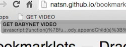

Bookmarklets — Drag and drop these onto your bookmark bar for use with research.ori.org websites.  Clicking these on pages with a video should take you to the video where you can save it to your desktop.